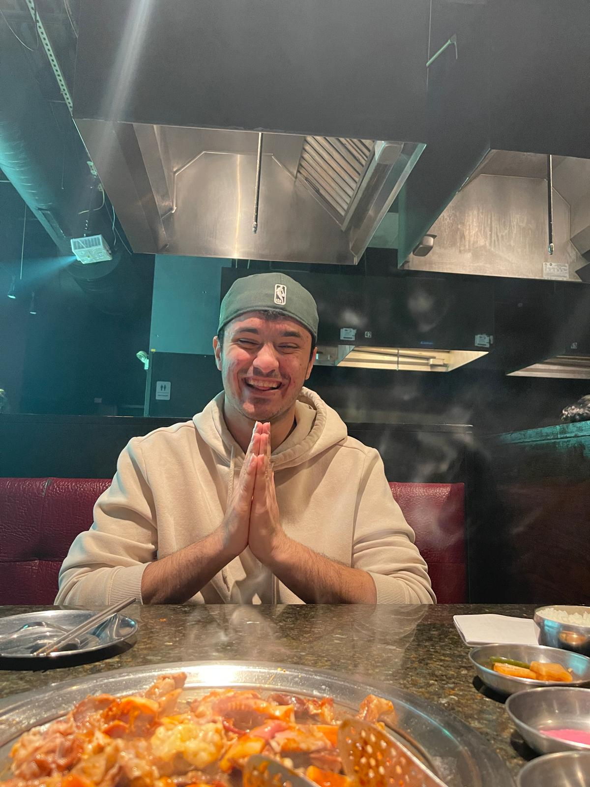
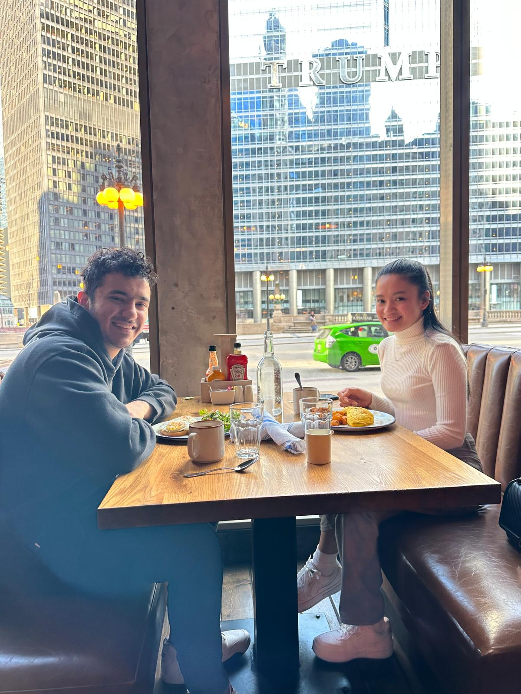
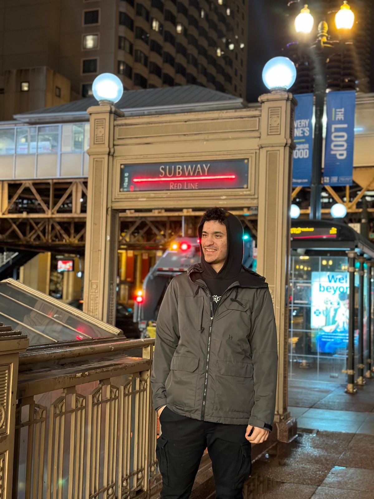
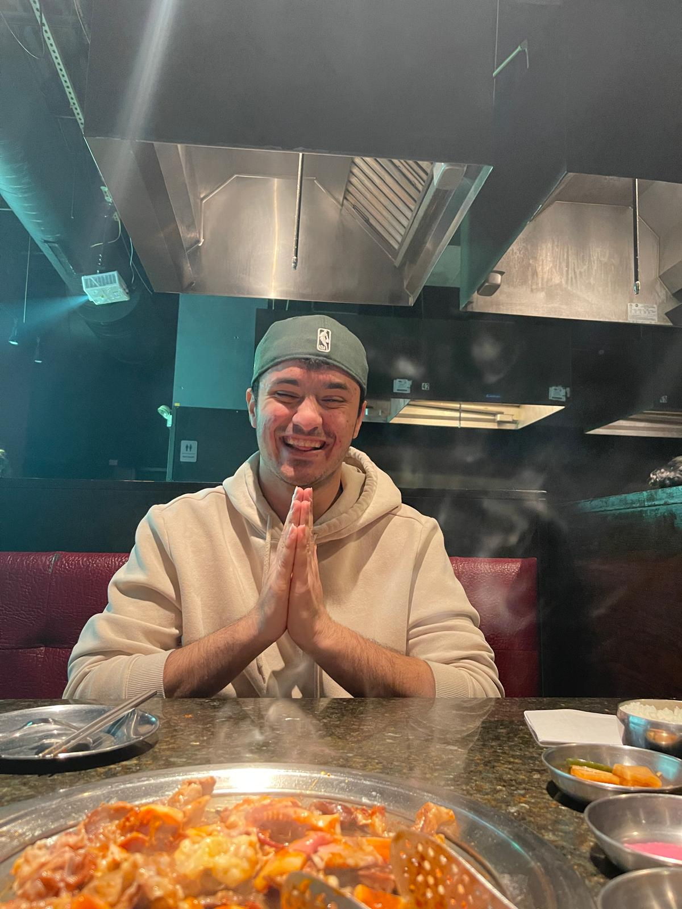
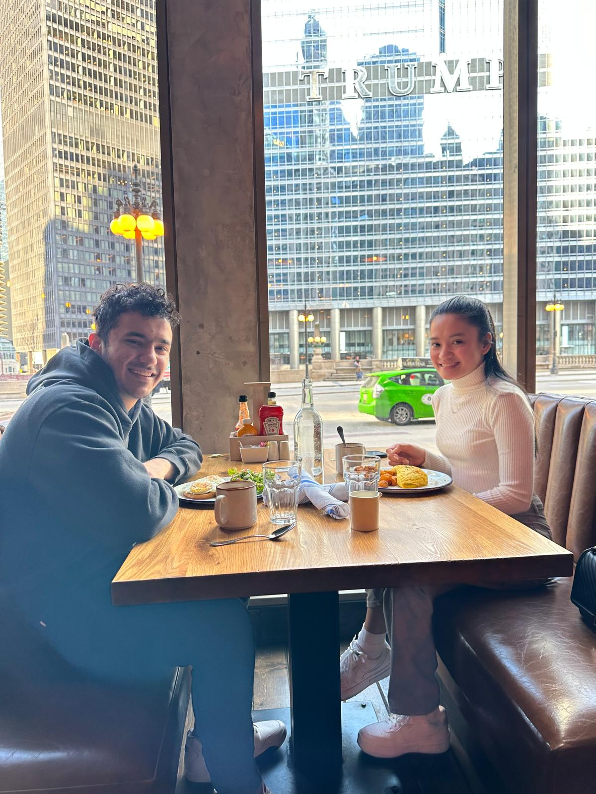
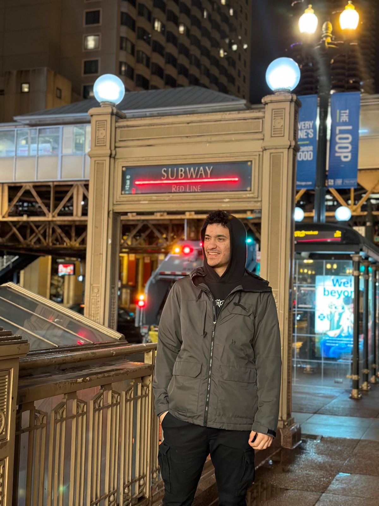

Our First Valentine’s Day in Chicago
Spending our very first Valentine’s Day together in Chicago was magical. Although it was my first time visiting such a massive and modern city, I was immediately captivated by its energy and skyline.
We stayed at the LondonHouse hotel, and its rooftop view made us feel like we had the entire city at our feet. I happened to wear my favorite Naruto hoodie that day, which sparked a conversation with the front desk clerk — who turned out to be a fellow anime fan. After chatting about Naruto for a while, they gave us a beautiful room that directly overlooked the Chicago River. It was the perfect start to our day.
One of the highlights for me was trying Korean BBQ for the first time. Cooking my own octopus was a strange but exciting experience. I also took my girlfriend to a Turkish restaurant — it was her first time trying Turkish food, and seeing her enjoy it made me incredibly happy.
We also visited "The Bean," a huge metal sculpture in the heart of the city. I still don’t know why there’s a giant bean in the middle of Chicago, but it’s definitely popular and worth the visit.
This trip was full of new experiences, cultural discoveries, and amazing food. As one wise friend once told me: “The best thing about going to Chicago… is coming back to Wisconsin.”